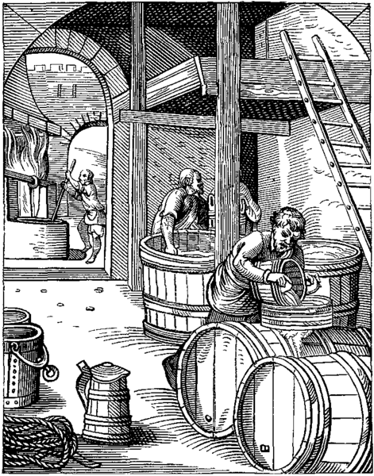

|  | HISTORIADo napojów alkoholowych znanych najdłużej należy wino oraz piwo, natomiast w Polsce miód pitny (otrzymywany przez sfermentowanie roztworu miodu w wodzie). Robienie miodu pitnego było rytualnym aktem większości antycznych kultur i niektórzy archeolodzy twierdzą, że nabycie umiejętności produkcji alkoholu zapoczątkowało proces przeistoczenia się ludzkości z „dzikiej” w cywilizowaną. Destylacja wina do produkcji wysokoprocentowych napojów alkoholowych została odkryta przez arabskiego alchemika Gebera, a jego metody zostały zaadaptowane przez Europejczyków. Uważano, że alkohol posiada właściwości magiczne i lecznicze, a proces jego destylacji był licencjonowany przez rządy w większości krajów. W Indiach napoje alkoholowe uważa się za święte i poświęcone są one bogu Warunie. Tradycja serwowania aromatyzowanych wódek (likierów) dla gości po spożytym obiedzie uważana jest tam za gwarancję zdrowia i bezpieczeństwa. Tradycja chińska twierdzi, że zatrucie alkoholowe u ludzi spowodowane jest nieumiejętnością kooperacji z bardzo mocnymi duchowymi siłami zawartymi w napojach alkoholowych. Alkohol był istotnym elementem uczt i biesiad. Co więcej, był on uważany za uniwersalne remedium na choroby zakaźne i epidemiczne, jak dżuma, grypa hiszpanka. Zwyczaj ten był wielokrotnie opisywany w dziejach kultury (Dekameron, Maska czerwonego moru, Dziennik roku zarazy). |
W Polsce w 2013 roku spożycie alkoholu w przeliczeniu na osobę wyniosło 9,67 l. Spożycie alkoholu na świecie w litrach per capita (powyżej 15. roku życia) na rok:
Ponad połowa Polaków (56%) deklaruje, że pije alkohol okazjonalnie, mniej niż co dziesiąty badany spożywa go często (8%), a co trzeci unika okazji do picia alkoholu lub w ogóle nie bierze go do ust (33%). Najczęściej spożywanym alkoholem jest piwo.
Mięśnie i niebieskie oczy pomagają lepiej tolerować alkohol
To nieprawda, że im jesteś większy, tym lepiej tolerujesz alkohol. Chodzi tak naprawdę o masę mięśniową. Bogate w wodę tkanki mięśniowe skutecznie wchłaniają alkohol, zmniejszając tym samym ilość przedostającą się do mózgu. Co ciekawe, znaczenie ma również kolor twoich oczu. Osoby o niebieskich oczach mają wyższą tolerancję na alkohol niż ludzie o oczach brązowych. Hormon odpowiedzialny za produkcję melaniny, pigment barwiący oczy i skórę, również odgrywa rolę w tym, jak twoje ciało radzi sobie z alkoholem.
Nigdy nie pijesz sam
Badania sugerują, że w każdym momencie 0,7% światowej populacji jest pijana. Oznacza to, że jeśli właśnie pijesz alkohol, co najmniej 50 milionów ludzi na całym świecie robi to samo. Kraje takie jak Czechy prawdopodobnie zawyżają średnią, bo pije się tam najwięcej piwa na świecie. Ich niesamowity poziom spożycia piwa wynoszący 142,4 litrów na osobę pozostawia Irlandczyków, Niemców, Amerykanów i inne „piwne narody” daleko w tyle.
Zakrzywione kieliszki i puste żołądki pomagają się upić
Badania pokazują, że ludzie piją wolniej, gdy alkohol podawany jest w kieliszkach o prostych bokach w porównaniu z kieliszkami o zakrzywionych bokach. Co więcej, najwyższy poziom stężenia alkoholu we krwi może być 3 razy większy u osób pijących na pusty żołądek niż u tych, które zjedzą wcześniej posiłek.
Kawa naprawia szkody wyrządzone przez alkohol
Jeśli przez miesiąc zrezygnujesz z picia alkoholu, możesz poprawić pracę wątroby, obniżyć ciśnienie krwi i zmniejszyć ryzyko wystąpienia cukrzycy. Stwierdzono również, że kawa naprawia uszkodzenia wątroby spowodowane nadmiernym spożyciem alkoholu.
Historia alkoholu jest bardzo długa
Dla naszych przodków owoce były niezwykle ważnym źródłem pożywienia, co doprowadziło do genetycznego pociągu do dojrzałych i przejrzanych owoców zawierających etanol. To może wyjaśniać, dlaczego zakłada się, że fermentowane napoje były produkowane już 100 tys. lat temu. Być może także dlatego do 1916 roku whisky i brandy znajdowały się na liście leków zatwierdzonych naukowo w Stanach Zjednoczonych. I być może nawet dlatego w Rosji piwo nie było uważane za napój alkoholowy aż do 2013 roku.